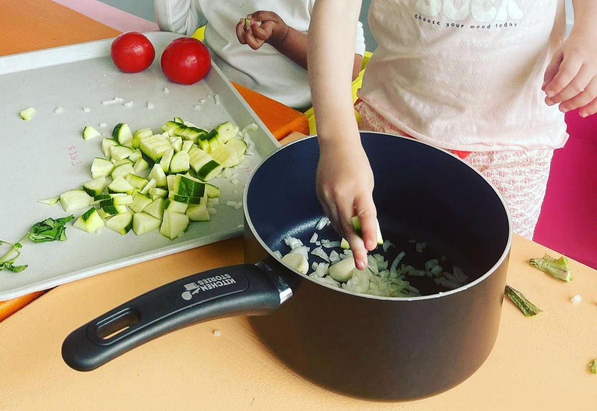

<!-- Slideshow container -->
<section id="slider">
  <div>
    <div id="img" class="text-align-center">
      
    </div>
    <!--    
    <div id="precedent"><</div>
    <div id="suivant">></div>
-->
  </div>
</section>

<script>
  const tableau = ["Img/cuisineActivity.jpg", "Img/slider2.jpeg"];
  /*const precedent = document.getElementById("precedent");
  /const suivant = document.getElementById("suivant");*/

  let indice = 0;
  // au clique on passe à l'image suivante
  //suivant.addEventListener("click", fonction2);
  function fonction2() {
    indice = indice + 1;
    if (indice > tableau.length - 1) {
      indice = 0;
    }
    document.getElementById("slide").src = tableau[indice];
  }
  /*
  // au clique on passe à l'image précédente
  precedent.addEventListener("click", fonction1);
  function fonction1() {
    indice = indice - 1;
    if (indice < 0) {
      indice = tableau.length - 1;
    }
    document.getElementById("slide").src = tableau[indice];
  }*/

  // La fonction setInterval pour defiler
  setInterval("fonction2()", 1500); // 1500 c'est en ms
  // ou on peut remplacer la fonction2 par fonction1
</script>
